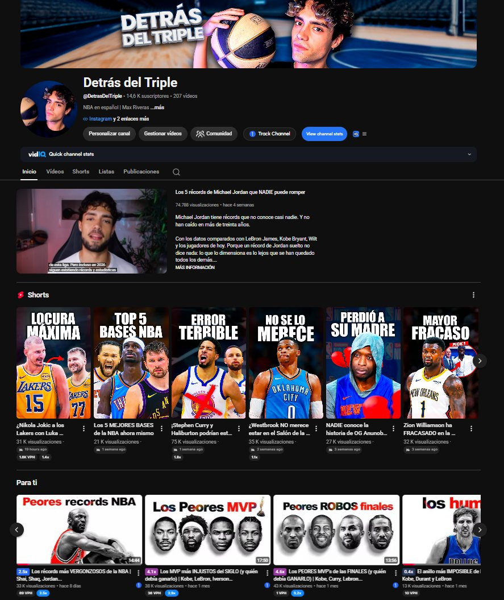
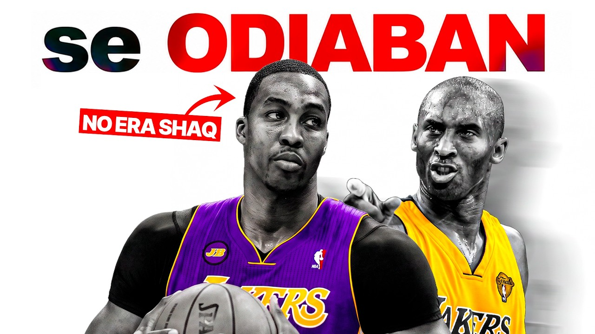

por Max Riveras — Análisis NBA en español
141.519 horas de mi contenido consumidas: el equivalente a 16 años de visionado continuo. Más de 12,6M de vistas orgánicas en el nicho NBA hispanohablante, y 6,6M más en Facebook. Sin un solo euro en publicidad.
Sin compromiso · Respuesta en menos de 24h

Todo el alcance es orgánico, sin un euro en publicidad. Y no caduca: los vídeos siguen sumando vistas y suscriptores meses después de publicarse.
Alcance orgánico: solo el 0,05% de esas visualizaciones vino de publicidad.
Alcance máximo · Vídeo largo (11:18)
Récord de conversión · Vídeo largo (12:47)

Récord de atención · Vídeo largo (22:56)
💡 8 minutos y 45 segundos es lo que dura de media una visita a ese vídeo. Una integración de 60 a 90 segundos no se salta: se ve. Y con 14.700 suscriptores, el canal alcanzó 227.200 espectadores únicos en los últimos 28 días, 15 veces su base.
Un canal que crece, no uno que se mantiene.
Y no es un pico suelto: un solo vídeo aportó +1.394 suscriptores, uno por cada 54 visualizaciones. Este canal no acumula audiencia de paso — la convierte. Tu marca no entra en una audiencia estancada: entra en una que se está formando ahora.
14.700 suscriptores, pero 227.200 espectadores únicos en 28 días: 15 veces la base. México (19,7%), España (16,4%), Rep. Dominicana (13,7%) y Argentina (6,6%). Todo orgánico, sin un euro en publicidad.
El 58,3% de la audiencia es recurrente. Eso significa que una campaña no impacta una vez y desaparece: impacta a la misma gente, semana tras semana, con la credibilidad que da la repetición.
141.519 horas consumidas entre YouTube y Facebook — 16 años de visionado. 94,9% de retención en shorts, 41,9% en vídeos de más de diez minutos y un récord de 8:45 de visionado medio. Una mención de 60 a 90 segundos cae dentro de lo que la audiencia ya está viendo.
89,8% hombres, 70,5% entre 25 y 54 años, el 45% en el 20% de renta más alta y un 76% sin hijos. No es audiencia adolescente: es gente con decisión y dinero.
YouTube la marca con interés muy alto en componentes electrónicos para automóviles, productos de limpieza y suministros del hogar — y alto en automoción y en comida y accesorios para mascotas. Si tu marca está en esas categorías, el encaje no es una suposición: es un dato.
YouTube (14.700), Facebook (9.300), Instagram (4.700) y TikTok (3.668): 32.368 seguidores y 12,6M de vistas acumuladas. Una sola pieza se distribuye en todo el ecosistema NBA en español.
"141.519 horas de mi contenido consumidas, sin gastar un euro en publicidad. Aquí no se compra alcance: se gana vídeo a vídeo, con gente que vuelve cada semana."
Tres formatos pensados para que tu marca entre con confianza — y vea resultados antes de comprometerse a más.
En todos los paquetes, siempre incluido:
Si tu objetivo no encaja exactamente en uno de los packs, podemos diseñar una propuesta personalizada adaptada a tu marca, mercado y calendario.
Pedir propuesta personalizada (respuesta en 24h)Abierto a colaboraciones puntuales, paquetes mensuales y programas de afiliados. Si tu marca quiere llegar a hombres de 25 a 54 años apasionados por la NBA en México, España, el Caribe hispano y Sudamérica, hablemos sin compromiso.
Ver disponibilidadSin compromiso · Respuesta en menos de 24h